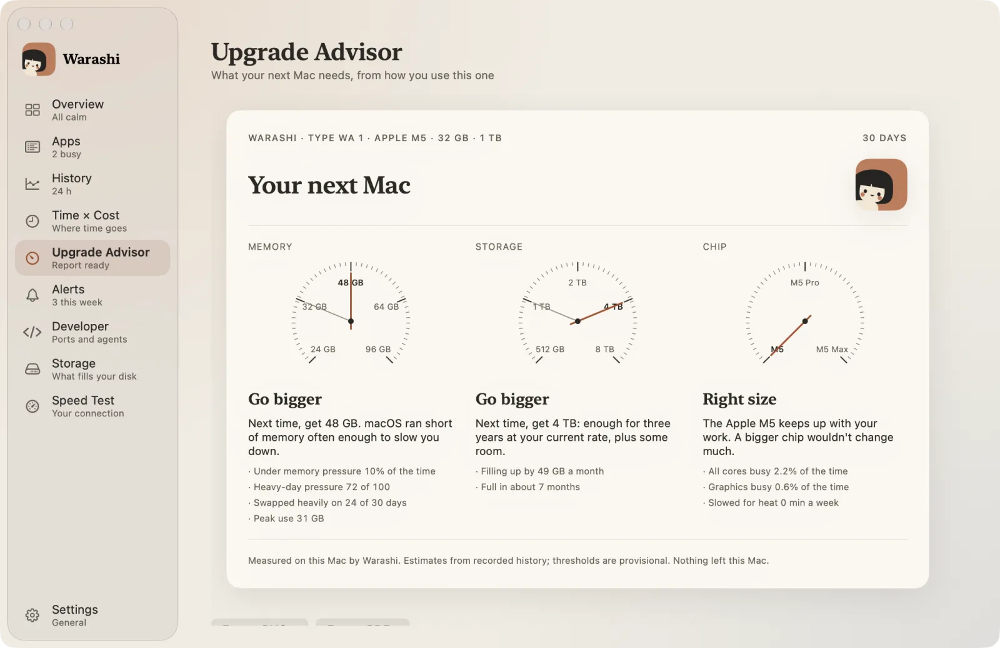
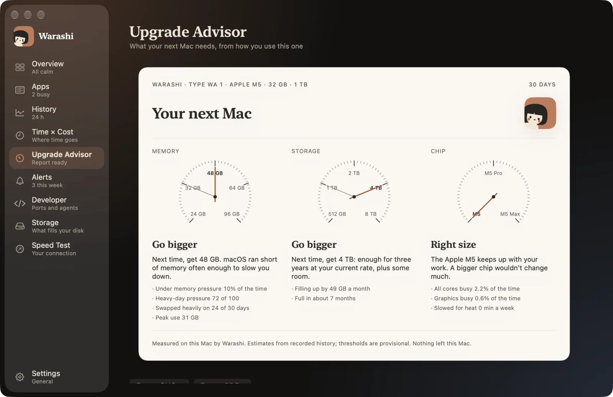

大多数人升级是因为旧 Mac“感觉慢”，或者新款看着很诱人。更好的理由是：你自己的数据显示，某项资源快要不够用了。
三项关键因素
- 内存：在普通的日子里，你是否面临内存压力并产生交换？见Mac 内存多大够用？
- 储存空间：你的磁盘占满的速度有多快？一块已用 70%、每月增长 20 GB 的磁盘，会在一年内占满。
- 芯片：它多久全速运行一次、每次持续多久，以及是否会因过热而降速？
什么时候不必升级
如果内存压力为绿色、你的磁盘按当前速度还能用几年，而且芯片很少长时间全速运行，那么新 Mac 对你的工作来说不会快多少。清理一下储存空间，把钱留着吧。
什么时候该升级，以及升级到什么配置
按你实际触及的上限来买：如果在忙碌的日子里会产生交换，就把内存加大一档；储存空间按三年的增长量再留出余量来选；只有在你持续高负载或 GPU 工作需要时，才选 Pro 或 Max 芯片。
让 30 天的数据来决定
Warashi 的升级顾问每天记录依据数据，30 天后会推荐内存、储存空间和芯片，并取整到 Apple 实际销售的配置，同时附上每项结论背后的数据。


Warashi 可以替你完成这件事。它在后台记录你的 Mac 的历史，让你可以回头查看当时发生了什么，而不必现场去捕捉。下载免费 Beta 版 →